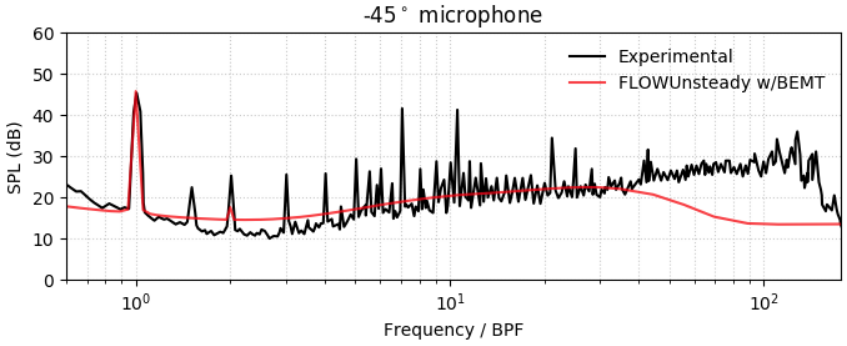
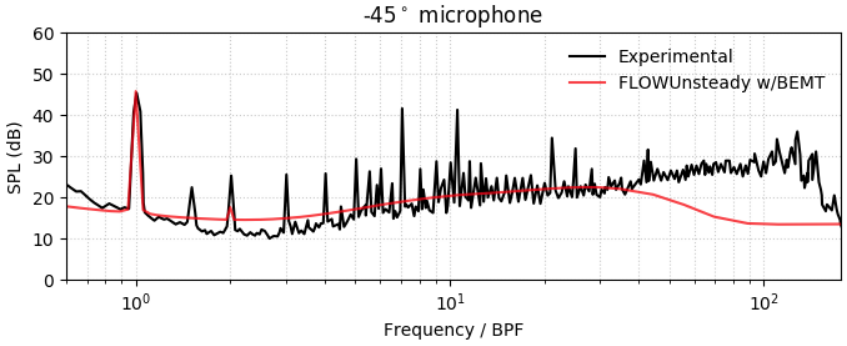

Welcome to FLOWUnsteady

FLOWUnsteady is a simulation engine of mixed-fidelity unsteady aerodynamics and aeroacoustics. This suite brings together mid and high-fidelity aerodynamics tools developed at BYU's FLOW Lab: GeometricTools (geometric engine), FLOWVLM (VLM and strip theory solver), CCBlade (blade element momentum solver), MyPanel (3D inviscid panel solver), and FLOWVPM (viscous vortex particle method). The aeroacoustic solver integrates PSU-WOPWOP (FW-H solver) and FLOWNoise (BPM code).
This package was written for Julia 1.4.2.
If you are brand-new to FLOWUnsteady, you should begin with our Getting Started guide in the Tutorials. You may then consider taking a glance at how to Visualize with Paraview in order to be prepared to visualize as you go.
After getting the code set up, you'll be able to take your First Steps with FLOWUnsteady.
For additional validation and numerical recommendations, check this notebook: docs/resources/validation.ipynb.
For example simulations, check this notebook: docs/resources/examples.ipynb.
For an example and validation of aeroacoustics, check this notebook: examples/rotornoise/singlerotor.ipynb.
SOURCE CODE: https://github.com/byuflowlab/FLOWUnsteady
All aerodynamics codes used in FLOWUnsteady are opensource and available in Github, except for the VPM solver. Without the VPM, the user can still use all quasi-steady aerodynamic and aeroacoustic solvers in FLOWUnsteady. To get full access to the unsteady solver, please contact Eduardo Alvarez (edoalvarez.com) or the FLOW Lab (flow.byu.edu).
FEATURES
- Viscous, unsteady wake mixing of rotors and lifting surfaces.
- Fully resolved rotor-on-rotor, rotor-on-wing, wing-on-rotor, and wing-on-wing
interactions.
- Fully resolved unsteady loads during prescribed kinematic maneuvers.
LIMITATIONS
- Viscous drag and separation is only captured through strip theory, without
attempting to shed separation wakes.
- No viscous drag is captured through VLM and panel models.
FUTURE WORK
- Coupling of aerodynamic loads and flight path allowing dynamic simulations.
- Bluff body separation and panel-predicted viscous drag (?).
Examples
HEAVING WING: examples/heavingwing.jl 
CROSS-WIND CIRCULAR PATH: examples/circularpath.jl 
HOVERING ROTOR: examples/singlerotor.jl 
INTERACTING TANDEM HEAVING WING: examples/tandemheavingwing.jl 
BLOWN WING: examples/blownwing/blownwing.jl 
Wind-harvesting Aircraft: examples/windcraft/windcraft.jl (in progress) 
eVTOL TRANSITION: examples/vahana/vahana.jl (in progress) 
Rotor Aeroacoustic Noise: examples/rotornoise/singlerotor.ipynb 
 

Framework Flowchart

Publications
- Alvarez, E. J., & Ning, A. (2021, in progress). Unsteady Mixed-fidelity Aerodynamics Solver for Maneuvering Multirotor Aircraft. AIAA SciTech Forum. [PDF]
- Alvarez, E. J., Schenk, A., Critchfield, T., and Ning, A. (2020, in review). Rotor-on-Rotor Aeroacoustic Interactions of Multirotor in Hover. Journal of the American Helicopter Society.
- Alvarez, E. J., (2020). Quasi-steady Aerodynamics Solver for a High-fidelity Controls Framework. FLOWUnsteady Documentation. [PDF]
- Alvarez, E. J., & Ning, A. (2020, accepted). High-fidelity Modeling of Multirotor Aerodynamic Interactions for Aircraft Design. AIAA Journal. [PDF]
- Alvarez, E. J., & Ning, A. (2019). Modeling Multirotor Aerodynamic Interactions Through the Vortex Particle Method. AIAA AVIATION Forum. DOI: 10.2514/6.2019-2827[SLIDES][PDF]
- Alvarez, E. J., & Ning, A. (2018). Development of a Vortex Particle Code for the Modeling of Wake Interaction in Distributed Propulsion. AIAA AVIATION Forum. DOI: 10.2514/6.2018-3646[SLIDES][PDF]
Authorship
- Main developer : Eduardo J Alvarez
- Email : Edo.AlvarezR@gmail.com
- Website : edoalvarez.com
- Created : Oct 2019
- License : MIT License